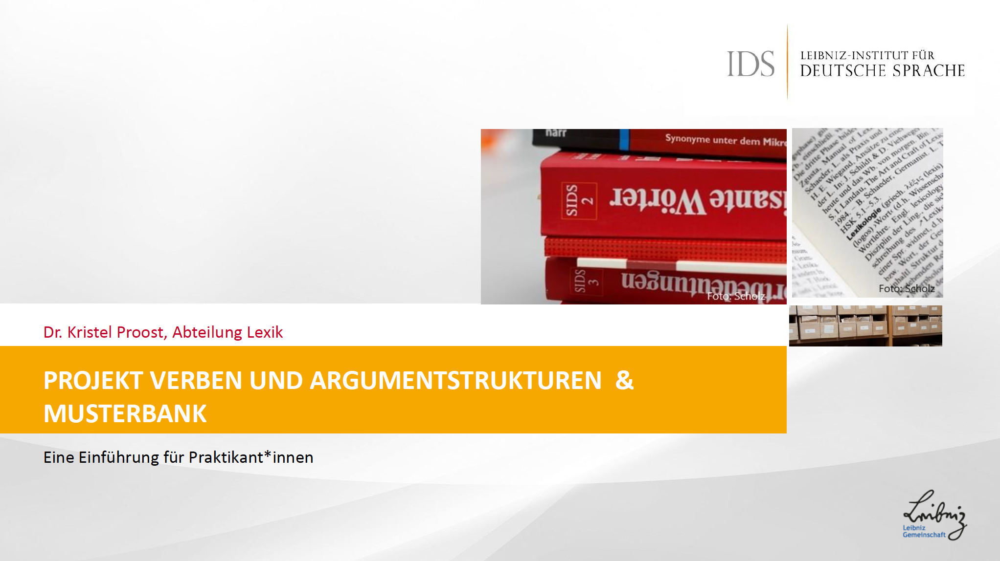
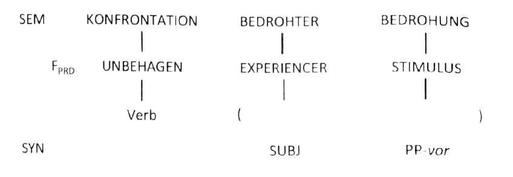
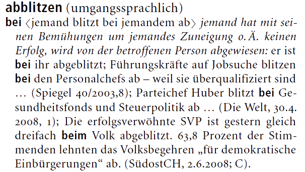
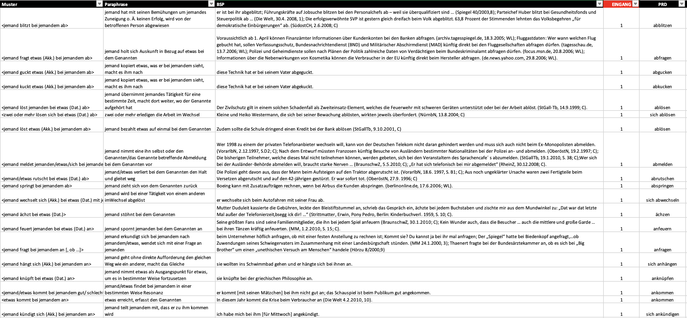

Praktikumsbericht
Leibniz-Institut für Deutsche Sprache
Verben und Argumentstrukturen

Wissenschaftliche Erfahrungen im Projekt
Die Integration in die Projektarbeit geschah dank der guten internen Organisation erfolgreich. Wegen der Pandemie musste das Praktikum online stattfinden. In diesem Abschnitt stehen die Tätigkeiten, mit denen ich mich auseinandergesetzt habe, im Mittelpunkt. Zunächst sollten einige Aspekte zur Organisation des Praktikums besprochen werden. Wie im Vertrag zu lesen ist, absolvierte ich das Pflichtpraktikum im September, obwohl ich im Oktober im Projekt im Rahmen eines fakultativen Praktikums für mein Studium weiterarbeitete. Im September wurde die tägliche Arbeitszeit auf ungefähr 7 Stunden (ca. 10:00 Uhr-17:00 Uhr) festgelegt und im Oktober arbeitete ich nur auf Teilzeit. Als Arbeitsmittel standen mir eine institutionelle E-Mail und ein VPN des Instituts zur Verfügung, damit ich Zugriff auf all die notwendigen Dokumente sowie auf das Software des Unternehmens haben konnte. In dieser Seite wird beschrieben, an welchen Aktivitäten ich beteiligt war und wie sie abgelaufen sind.
Gantt-Diagramm: zeitliche Abfolge der Aktivitäten
Zuerst wird auf die zeitliche Abfolge der Aktivitäten eingegangen. Ein Gantt-Diagramm ist ein bekanntes Instrument im Rahmen des Projektmanagements, denn es zeigt aus graphischer Sicht die zeitliche Abfolge von Aktivitäten. Im Gantt-Diagramm werden die Tätigkeiten in die erste Spalte eingetragen und dann kann man in den Zeilen die Zeitachse beobachten. Es gilt in dem Fall als Überblick über die Aktivitäten, mit denen ich mich im Projekt beschäftigt habe.
Abbildung 1: Zeitliche Abfolge der Aktivitäten im Rahmen des Projektes (Quelle: eigene Darstellung)
Von diesen Aktivitäten wird im Folgenden die Rede sein, indem man jede einzelne Tätigkeit betrachtet. Darüber hinaus haben andere Meetings mit Mitarbeitenden des Projektes stattgefunden, die nicht im Gantt-Diagramm zu sehen sind. Die Meetings fanden auf der Zoom-Plattform statt und dabei wurden Aspekte des Projektes diskutiert. Normalerweise ging es um Richtlinien für Aktivitäten, an denen ich später arbeiten musste. An den Meetings nahmen meine Betreuerin, Dr. Kristel Proost, und ich teil und sie stellten einen wesentlichen Teil meines Praktikums dar, denn ich konnte somit trotz der pandemischen Lage im ständigen Kontakt mit meiner Betreuerin bleiben, um Punkte des Projektes zur Diskussion zu bringen.
Aktivitäten und Erfahrungen im Projekt
Die in der ersten Spalte des Gantt-Diagramms genannten Aktivitäten stellten den größten Teil meines Praktikums dar. Deswegen werden die oben erwähnten Tätigkeiten hier eingehend definiert und beschrieben.
Einführung in das Projekt
Da ich vor meinem ersten Arbeitstag keine Informationen zu der Organisation und zu meinen Aufgaben im Projekt hatte, traf ich am 1. September meine Betreuerin, damit sie eine Einführung in das Projekt vortragen konnte. Dabei ging es in erster Linie um die Aspekte, mit denen ich mich in der Seite Projekt bereits befasst habe. Aus theoretischer Sicht wurde mir mitgeteilt, worum es in der Konstruktionsgrammatik und in der Valenzgrammatik geht. Außerdem wurde festgestellt, wie die Vorgehensweise bei der Datenerhebung und -analyse aussieht, damit ich mich dann bald auf die individuelle Arbeit konzentrieren konnte. Wie in den folgenden Abschnitten zu lesen ist, beschränkte sich meine Arbeit vor allem auf die Erhebung und Annotation linguistischer Daten, die dann endgültig zur Artikelerstellung von großer Bedeutung sind.
Abbildung 2: Präsentation am ersten Arbeitstag (Quelle: Kristel Proost)
Einlesen von Literatur
Vor einer richtigen Auseinandersetzung mit den Aufgaben meines Praktikums musste ich mich mit der Lektüre von grundlegenden Texten befassen, die teilweise die theoretischen Grundlagen des Projektes darstellen. Das Einlesen von Literatur war eine wichtige Phase meines Praktikums, denn auf diese Weise konnte ich mein Wissen im Bereich der Grammatik und der Lexikographie vertiefen. Darüber hinaus erhielt ich somit Auskunft über die Artikelerstellung, eine Phase, mit der ich mich schließlich nicht befasst habe. Ein Beispiel, das die Theorie verdeutlichen könnte, ist das Argumentstrukturmuster unten. Zu diesem Argumentstrukturmuster gehören laut Zeschel (2019) verschiedene Schemata mit der Präposition vor, wie z.B. sich vor etwas erschrecken oder sich vor etwas fürchten, was in die semantischen Kategorie Bedrohung einzuordnen ist.
Abbildung 3: Darstellung eines vor-Argumentstrukturmusters (Quelle: Zeschel, 2019, S. 46)
Erstellung der bei-Strukturmuster
Diese praktische Aufgabe diente zur Exemplifizierung der Strukturmuster mit präpositionalen Objekten, deren Kopf die Präposition bei war. Das Wörterbuch deutscher Präpositionen galt als Quelle zur Extraktion der Beispiele und zur Beschreibung der Muster. Diese Aufgabe bestand aus drei Phasen:
- Die erste Phase bestand in der Analyse von Mustern, die dann im Wörterbuch deutscher Präpositionen nachgeschlagen werden mussten. Die Muster waren wie folgt formuliert:
- "jemand blitzt bei jemandem ab"
- "jemand fragt etwas (Akk.) bei jemandem ab"
- "jemand guckt etwas (Akk.) bei jemandem ab"
- In einer zweiten Phase sollten diese Muster im oben erwähnten Wörterbuch zu Rate gezogen werden, um sie ausführlicher zu annotieren. Folgende Abbildung zeigt, über welche Auskunft das Wörterbuch verfügt:

Abbildung 4: Wörterbuchartikel zum Lemma abblitzen (Quelle: Müller, 2012, S. 7)
- In der letzten Phase sollte die Information aus dem Wörterbuch extrahiert werden und sie musste in eine Excel-Tabelle wie die folgende eingetragen werden:

Abbildung 4: Wörterbuchartikel zum Lemma abblitzen (Quelle: Müller, 2012, S. 7)
In den Zoom-Meetings wurde zu der oben erläuterten Analyse über die semantische Bedeutung der Präpositionalphrasen diskutiert. Es wurde dabei annotiert, ob die Muster eine lokale, temporale, direktionale oder abstrakte Bedeutung hatten. Das galt später zur Differenzierung zwischen den von Projektmitarbeitenden erstellten Mustern und den aus diesem Wörterbuch extrahierten Mustern.